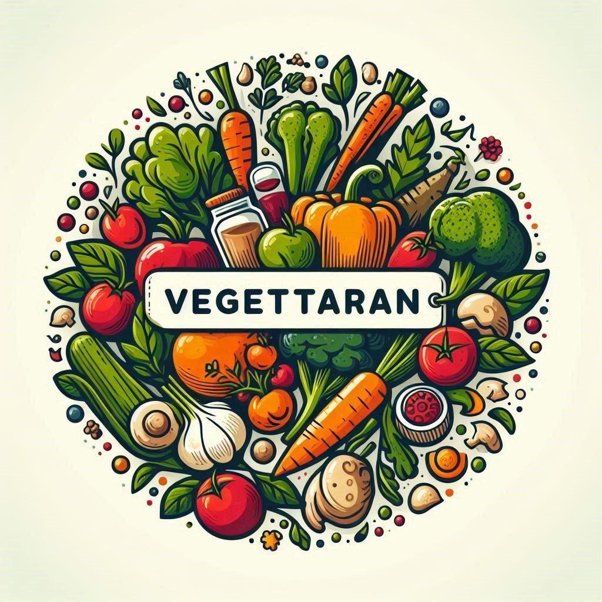

×
登入
電子郵件:
密碼:
登入
尚未註冊嗎？
註冊
×
註冊
姓名:
電子郵件:
密碼:
確認密碼:
註冊
已有帳號？
登入
×
登入註冊
購物車
聯絡我們

綠藝饗宴
首頁
食譜分類
▾
早餐
飯
麵
米粉
蔬菜
鹹點
甜點
營養資訊
購物清單
聯絡我們
常見問題
登出
登入註冊
購物車
聯絡我們
首頁
食譜分類▾
早餐
飯
麵
米粉
蔬菜
鹹點
甜點
營養資訊
購物清單
聯絡我們
常見問題
立即探索美味素食料理的秘密
×
上傳您的素食食譜
排序：
最新日期
最受歡迎
烹飪時間
評價
推薦食譜
Facebook
Instagram
Line
複製連結
您的反饋
提交